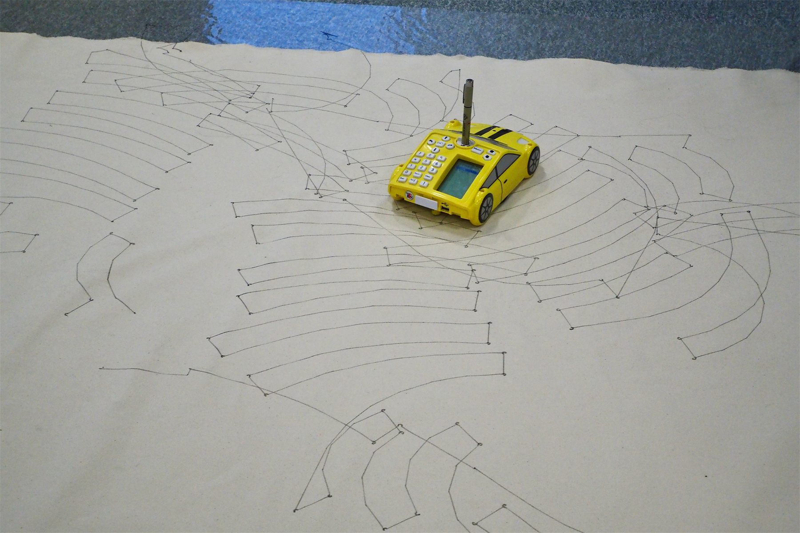
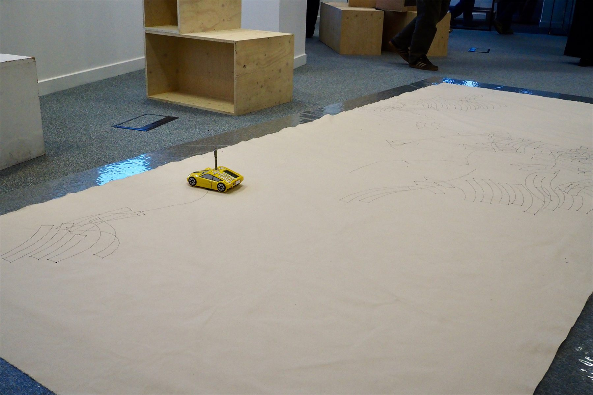
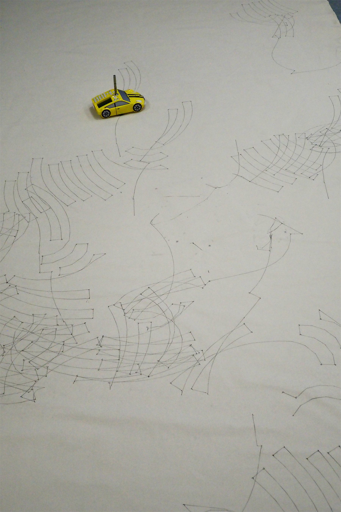
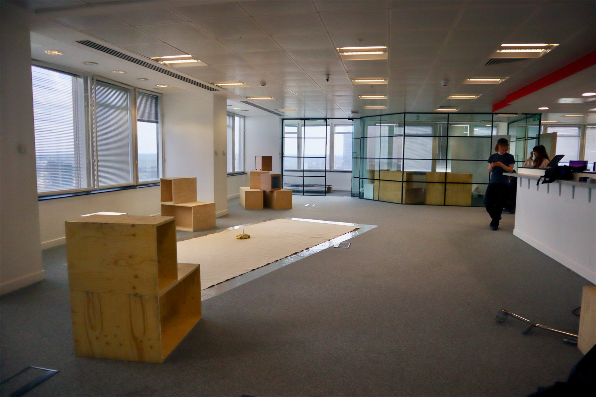
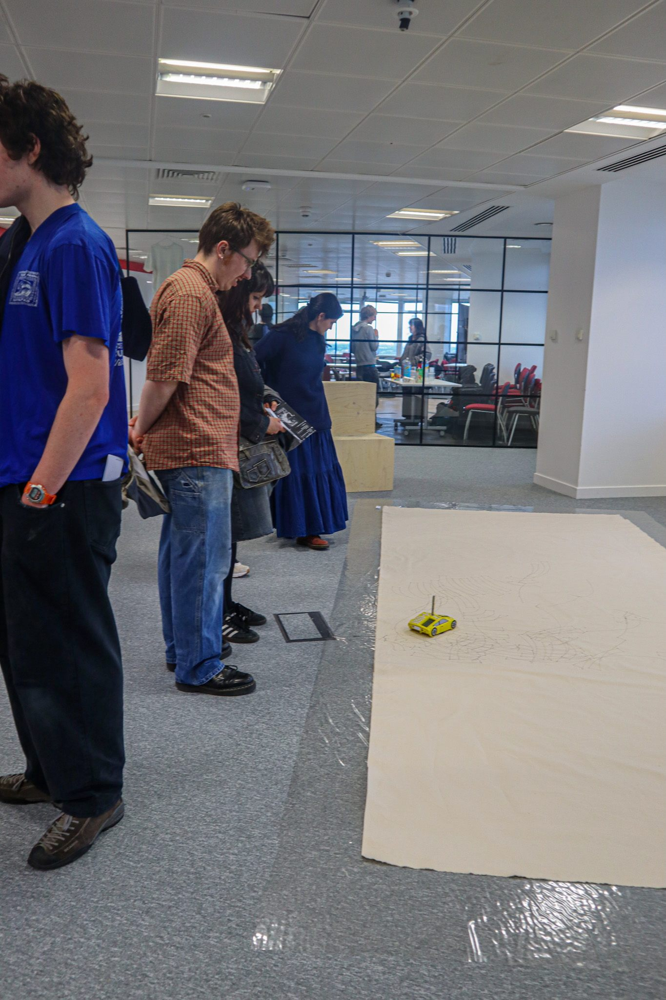
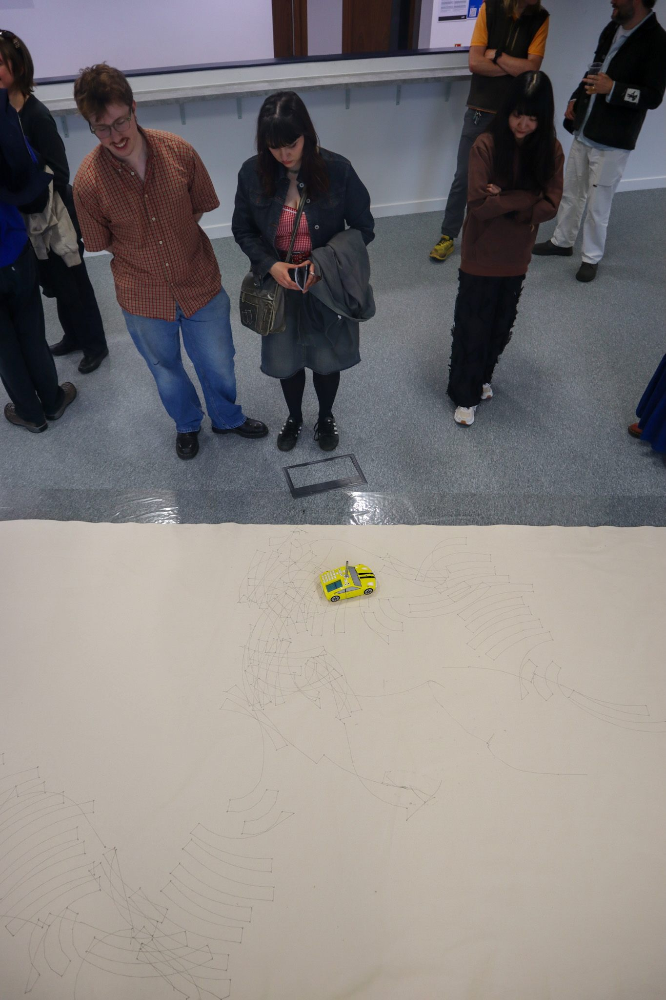
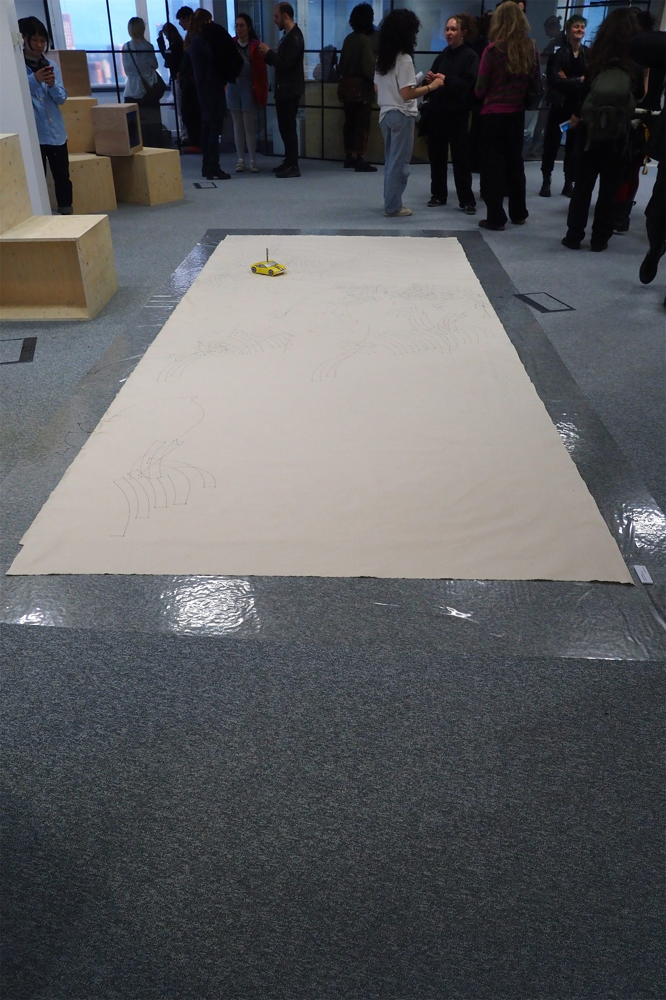
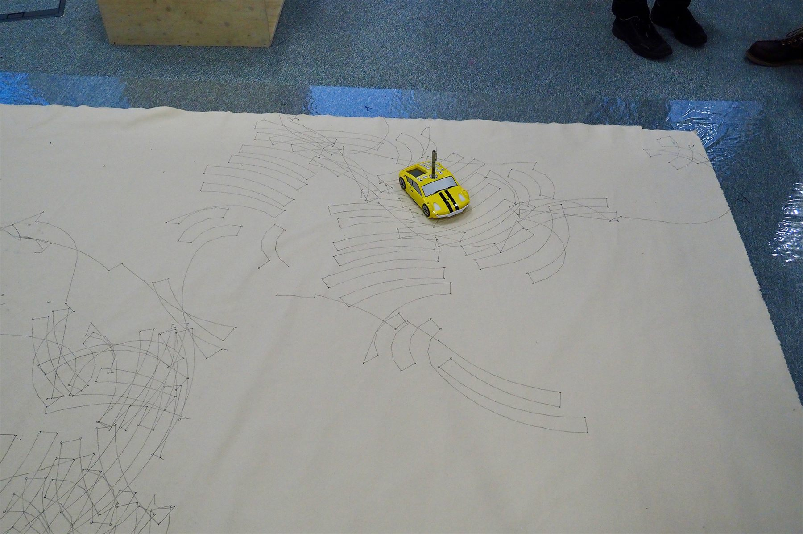
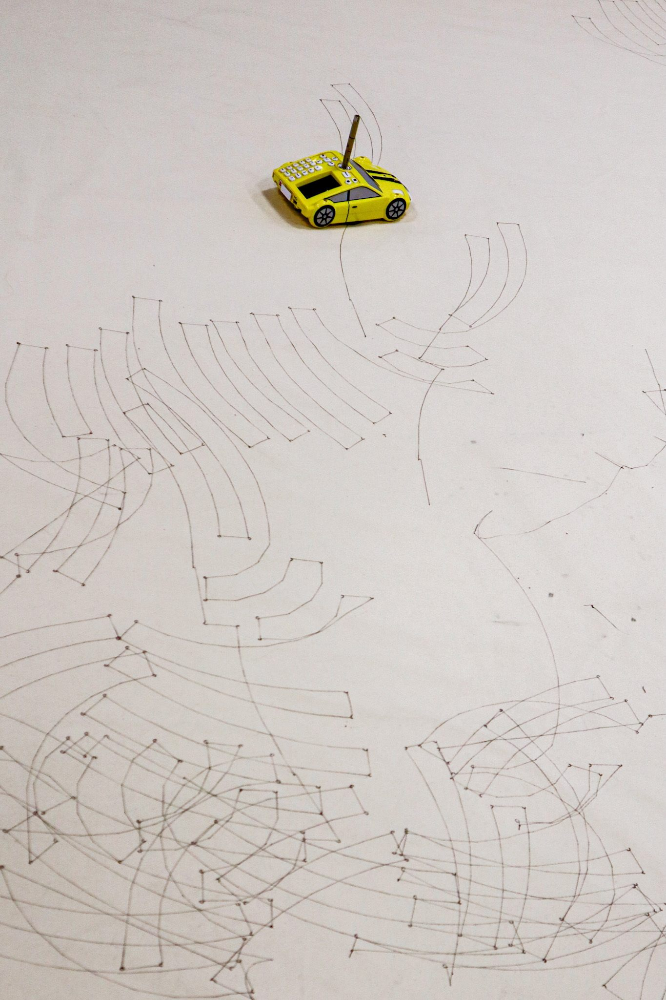

May 2025
Farewell to My Old Pals

Site-specific to Millbank, for its history served as a holding facility for convicted prisoners before they were transported to Australia.
A small robot car roams the floored canvas, its pen tracing the old transportation ballad Botany Bay sang by the convicted in the penal colony at Australia. Each word in the song becomes a short move: steady steps, gentle turns, and rhythmic pauses when the lyrics mention farewell, captains, convicts, wings, or Botany Bay. Over time the robot’s path fills the canvas with looping ribbons, signifying the journeys of prisoners who once left Millbank for Australia and the shifting tides of power around this site.
- Date
- May 2025
- Medium
- Robot plotter car, canvas, ink
- Tags
- Robotics, Installation, robot plotter


Folder_02, Millbank Tower, 8 - 9 May 2025






